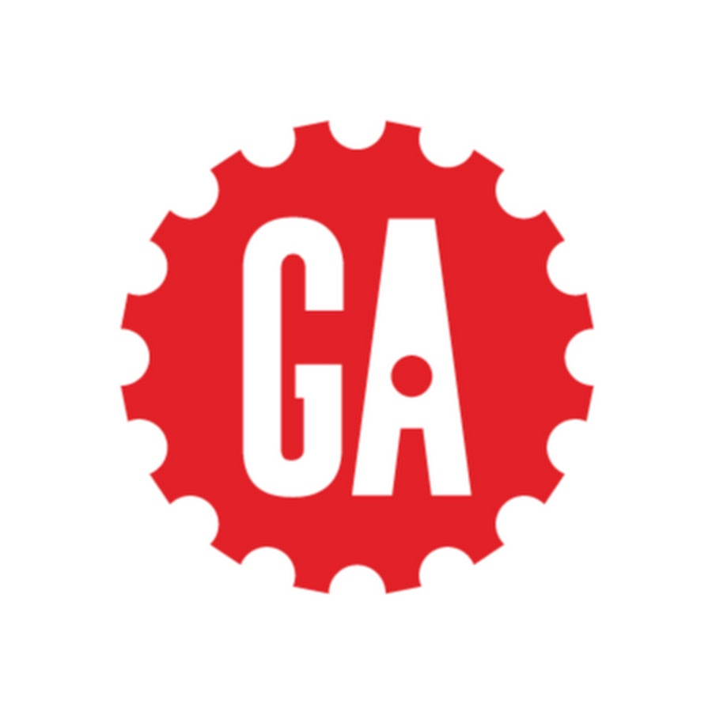

Program Team - Resilient Coders
Jun2021-Jan2024
Expert in Residence/Software Engineer on the program team responsible for running a coding bootcamp that taught full-stack web development (HTML, CSS, Javascript, Node.js, Express, MongoDB, React) to over 200+ developers at a non-profit serving underrepresented communities in Boston and Philadelphia.
Projecthub - Wayfair
Jan2019-Jul2020
Software Engineer on the AgilePT/ProjectHUb team building the internally developed tool for project management (React, Redux, PHP, Graphql, SQL, Java) used across the entire company, serving 5000+ employees to keep track of projects and improve productivity.
Teacher Assistant [FEWD] - General Assembly 
May2019-Sep2019
Teacher Assistant at General Assembly, a bootcamp that teaches web development to career changers. I was a TA for the Front End Web Development course (HTML, CSS, Javascript)